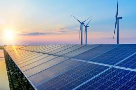

A Agroforte pode ser entendida como uma iniciativa voltada para transformar a forma como a agricultura é praticada, unindo tecnologia, sustentabilidade e eficiência produtiva em um mesmo conceito. Em vez de seguir apenas métodos tradicionais de cultivo, ela representa uma visão moderna do campo, na qual cada decisão é pensada para gerar mais produtividade com o menor impacto ambiental possível. Na prática, a Agroforte está relacionada à ideia de uma agricultura inteligente, onde sensores, dados climáticos, automação e monitoramento digital ajudam os produtores a entender melhor o solo, as plantas e o clima. Isso significa que o agricultor deixa de agir apenas com base na experiência e passa a tomar decisões guiadas por informações precisas e em tempo real. Por exemplo, em vez de irrigar uma plantação inteira de forma uniforme, sistemas inteligentes permitem identificar exatamente quais áreas precisam de água e em qual quantidade, evitando desperdícios e melhorando o desenvolvimento das culturas. Além do uso de tecnologia, a Agroforte também está profundamente ligada à preocupação ambiental. O objetivo não é apenas produzir mais, mas produzir de forma responsável, preservando recursos naturais como água, solo e biodiversidade. Isso envolve reduzir o uso excessivo de fertilizantes e defensivos agrícolas, diminuir a emissão de gases poluentes e incentivar fontes de energia limpa dentro das propriedades rurais, como a solar e a biomassa. Dessa forma, a produção agrícola passa a caminhar junto com a preservação do meio ambiente, em vez de ser uma atividade agressiva à natureza. Outro ponto importante da Agroforte é a busca por eficiência econômica e social no campo. Ao utilizar tecnologias mais avançadas, o produtor consegue reduzir custos operacionais, aumentar a produtividade e tornar sua produção mais competitiva. Ao mesmo tempo, esse modelo também contribui para o desenvolvimento de uma agricultura mais moderna, que pode atrair novas gerações para o setor rural, mostrando que o campo não é apenas tradicional, mas também altamente tecnológico. No fundo, a Agroforte representa uma mudança de mentalidade. Ela não é apenas um conjunto de ferramentas ou técnicas, mas uma forma de pensar a agricultura como um sistema integrado entre natureza e tecnologia. É a ideia de que o futuro da produção de alimentos depende de equilíbrio: produzir o suficiente para atender a população mundial, mas sem esgotar os recursos naturais do planeta.
.jpg)
A irrigação inteligente é uma tecnologia utilizada na agricultura para controlar o uso da água de forma automática e eficiente. Ela utiliza sensores, dados climáticos e sistemas automatizados para fornecer apenas a quantidade necessária de água para as plantações. Esse sistema ajuda produtores a economizar água, aumentar a produtividade e reduzir impactos ambientais..

A energia renovável é produzida a partir de recursos naturais que se renovam continuamente, como o sol, vento, água e biomassa. Na agricultura sustentável, ela é fundamental para reduzir custos, diminuir a poluição e aumentar a eficiência das propriedades rurais. A Agroforte incentiva o uso de fontes limpas de energia para criar um futuro mais sustentável no campo.
..jpg)
A agricultura de precisão é um modelo moderno de produção agrícola que usa tecnologia para monitorar, analisar e otimizar cada parte do cultivo. Em vez de tratar toda a lavoura da mesma forma, ela considera variações do solo, clima e plantas para tomar decisões mais inteligentes. O objetivo é simples: produzir mais usando menos recursos e reduzindo impactos ambientais.
Redução de emissões de gases do efeito estufa.
Preservação da biodiversidade e solo fértil.
Proteção de fontes de água e recursos naturais.